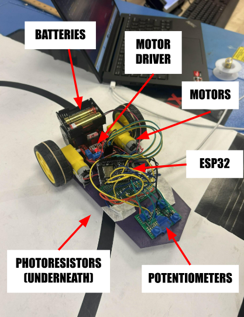
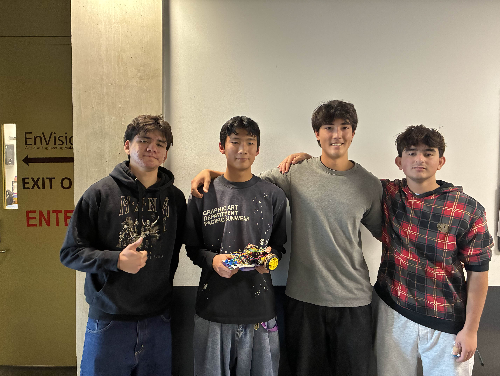

Prototyping and Assembly

Prototype Following Line
Final Competition Robot
PID Control
- PID Values: [Explain which values you chose and why]
- Speed & PID Adjustments: PID control is used to make minor adjustments to the robot’s sensitivity for accurate reading and maintaining position on the line. P is used for the reaction time of the robot, so we used a high P value for the frequency sweep, a medium-high P value for the loop track, and a low P value for the drag race. I is used to reduce drift as the robot keeps moving, so we used a medium-high I value for the drag race track and medium values for the other two tracks. D is used to reduce overshoot when the robot turns too quickly and helps keep the robot moving in a straight line. We used a low D value for the drag race track, and a high to medium-high D value for the loop and frequency sweep tracks, as they involved more turning.
Poster
.png)
Competition Scores & Rankings
| Track | Metric | Result | Rank |
|---|---|---|---|
| Drag Race | Time | 10.5 sec | [ ] |
| Freq Sweep | Distance | 7 | 4th |
| Loop | #Loops | 20 | 8th |
Competition Videos
Drag Race
Loop
Frequency Sweep
Team Picture
Improvements & Reflections
In the last week before finals, we had to upgrade the breadboards to soldered protoboard versions for the SPID circuit and the photoresistor circuit. We also had a faulty motor on the left side that we had to replace after changing the motor driver, hoping that was the issue. We also ended up soldering our photoresistor circuit twice because we didn’t test how well the photoresistors worked the first time, so we had to breadboard a testing circuit, test the photoresistors, and then resolder them onto our photoresistor circuit. As for final changes we wish we made, we should’ve moved our lightshield and photoresistors an inch or two farther forward so that we could have better reaction times, which would’ve especially helped us for the loop track.